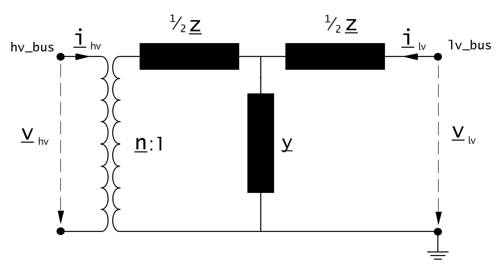

Transformer¶
See also
Parameters
net.trafo
| Parameter | Datatype | Value Range | Explanation |
| name | string | name of the transformer | |
| std_type | string | transformer standard type name | |
| hv_bus* | integer | high voltage bus index of the transformer | |
| lv_bus* | integer | low voltage bus index of the transformer | |
| sn_kva* | float | \(>\) 0 | rated apparent power of the transformer [kVA] |
| vn_hv_kv* | float | \(>\) 0 | rated voltage at high voltage bus [kV] |
| vn_lv_kv* | float | \(>\) 0 | rated voltage at low voltage bus [kV] |
| vsc_percent* | float | \(>\) 0 | short circuit voltage [%] |
| vscr_percent* | float | \(\geq\) 0 | real component of short circuit voltage [%] |
| pfe_kw* | float | \(\geq\) 0 | iron losses [kW] |
| i0_percent* | float | \(\geq\) 0 | open loop losses in [%] |
| shift_degree* | float | transformer phase shift angle | |
| tp_side | string | “hv”, “lv” | defines if tap changer is at the high- or low voltage side |
| tp_mid | integer | rated tap position | |
| tp_min | integer | minimum tap position | |
| tp_max | integer | maximum tap position | |
| tp_st_percent | float | \(>\) 0 | tap step size [%] |
| tp_pos | integer | current position of tap changer | |
| in_service* | boolean | “True” - in service
“False” - out of service
|
specifies if the transformer is in service. Only in service elements are considered during loadflow calculation |
*necessary for executing a loadflow calculation.
Loadflow Model
The equivalent circuit used for the transformer can be set in the loadflow with the parameter “trafo_model”.
trafo_model=’t’:
{kind=link}
trafo_model=’pi’:

Transformer Ratio:
The magnitude of the transformer ratio is given as:
The reference voltages of the high- and low voltage busses are taken from the net.bus table. If no tap changer is defined, the reference voltage of the transformer is taken directly from the transformer table:
If a tap changer is defined, the reference voltage is multiplied with the tap factor:
On which side the reference voltage is adapted depends on the \(tp\_side\) variable:
| tp_side=”hv” | tp_side=”lv” | |
| \(V_{n, HV, transformer}\) | \(vnh\_kv \cdot n_{tap}\) | \(vnh\_kv\) |
| \(V_{n, LV, transformer}\) | \(vnl\_kv\) | \(vnl\_kv \cdot n_{tap}\) |
Note
The variables tp_min and tp_max are not considered in the loadflow. The user is responsible to ensure that tp_min < tp_mid < tp_max!
Phase Shift:
If the loadflow is run with voltage_angles=True, the complex ratio is given as:
Otherwise, the ratio does not include a phase shift:
Impedances:
The short-circuit impedance is calculated as:
The magnetising admittance is calculated as:
The values calculated in that way are relative to the rated values of the transformer. To transform them into the per unit system, they have to be converted to the rated values of the network:
Where \(S_{N} = 1 \ MVA\) (see per unit system) and \(V_{N}\) is the nominal bus voltage at the low voltage side of the transformer.
Results
net.res_trafo
| Parameter | Datatype | Explanation |
| p_hv_kw | float | active power flow at the high voltage transformer bus [kW] |
| q_hv_kvar | float | reactive power flow at the high voltage transformer bus [kVar] |
| p_lv_kw | float | active power flow at the low voltage transformer bus [kW] |
| q_lv_kvar | float | reactive power flow at the low voltage transformer bus [kVar] |
| pl_kw | float | active power losses of the transformer [kW] |
| ql_kvar | float | reactive power consumption of the transformer [kvar] |
| i_hv_ka | float | current at the high voltage side of the transformer [kA] |
| i_lv_ka | float | current at the low voltage side of the transformer [kA] |
| loading_percent | float | load utilization relative to rated power [%] |
The definition of the transformer loading depends on the trafo_loading parameter of the loadflow.
For trafo_loading=”current”, the loading is calculated as:
For trafo_loading=”power”, the loading is defined as: